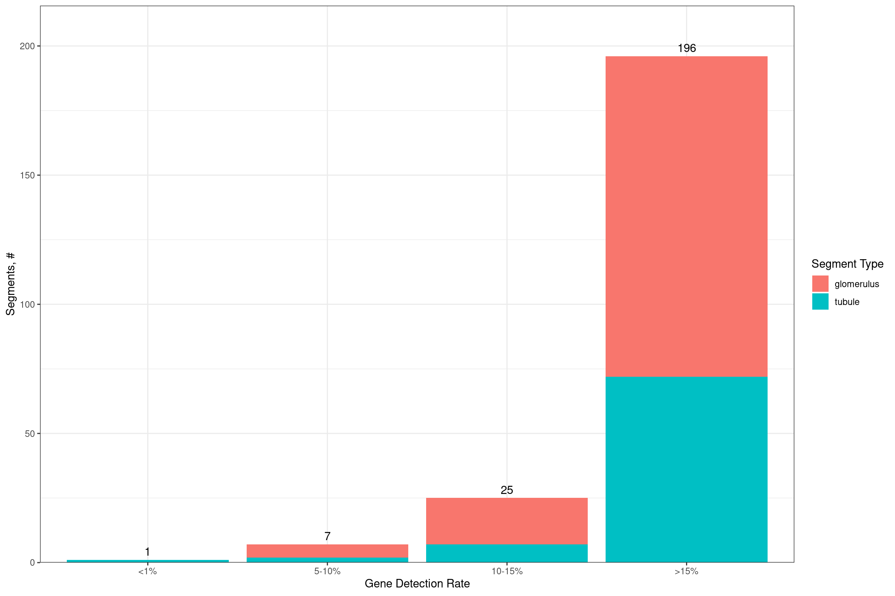
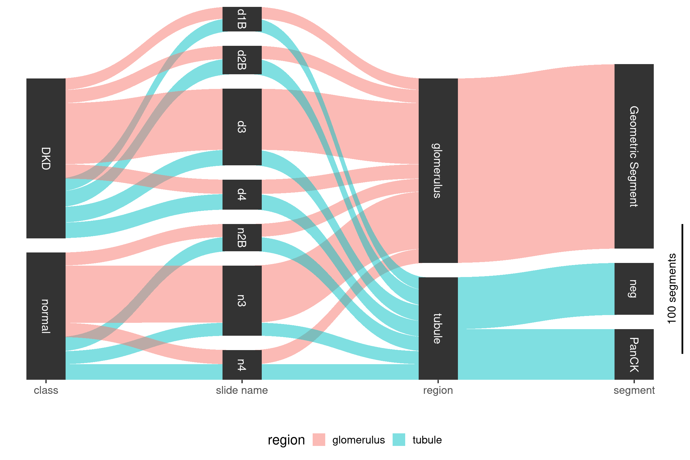
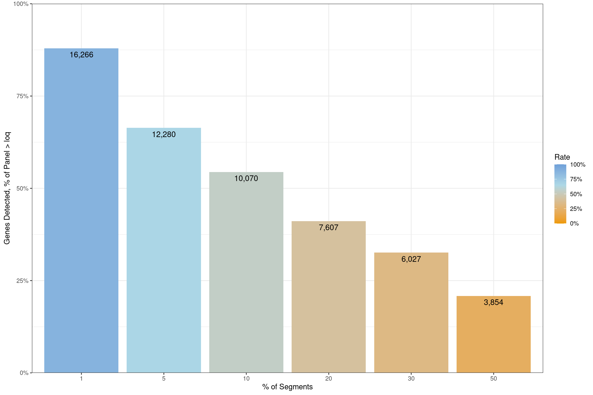
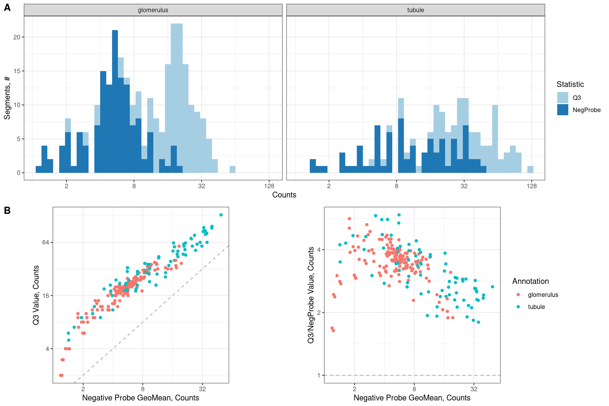
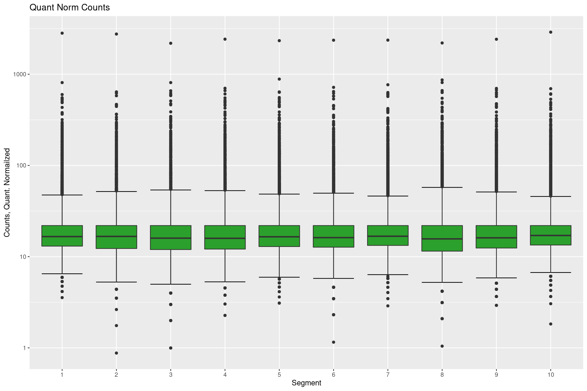
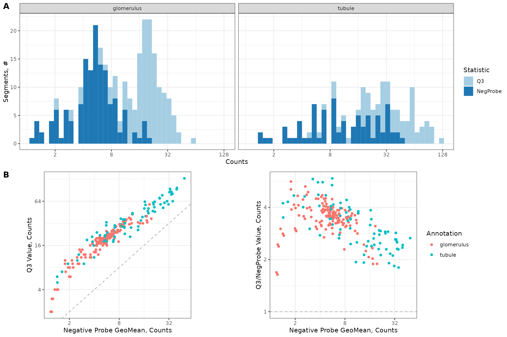
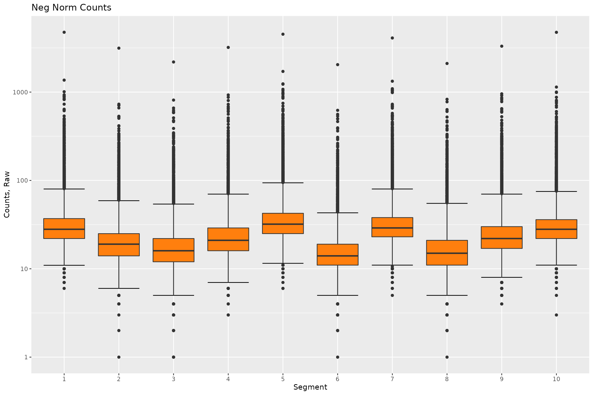
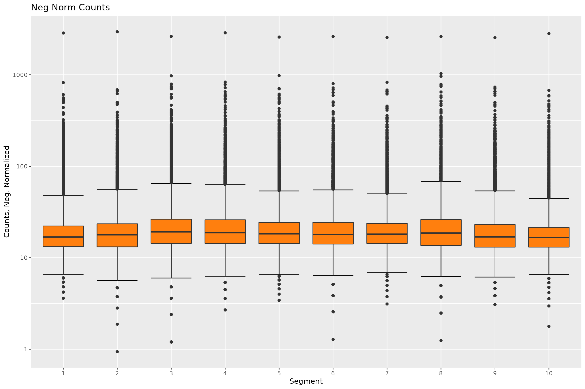

Integration Test Human Kidney
Source:vignettes/Integration_Test_Kidney.Rmd
Integration_Test_Kidney.Rmd
knitr::opts_chunk$set(echo = TRUE)
library(devtools)## Loading required package: usethis## ℹ Loading DSPWorkflow## Registered S3 method overwritten by 'GGally':
## method from
## +.gg ggplot2## Loading required package: Biobase## Loading required package: BiocGenerics##
## Attaching package: 'BiocGenerics'## The following objects are masked from 'package:stats':
##
## IQR, mad, sd, var, xtabs## The following objects are masked from 'package:base':
##
## anyDuplicated, append, as.data.frame, basename, cbind, colnames,
## dirname, do.call, duplicated, eval, evalq, Filter, Find, get, grep,
## grepl, intersect, is.unsorted, lapply, Map, mapply, match, mget,
## order, paste, pmax, pmax.int, pmin, pmin.int, Position, rank,
## rbind, Reduce, rownames, sapply, setdiff, sort, table, tapply,
## union, unique, unsplit, which.max, which.min## Welcome to Bioconductor
##
## Vignettes contain introductory material; view with
## 'browseVignettes()'. To cite Bioconductor, see
## 'citation("Biobase")', and for packages 'citation("pkgname")'.## Loading required package: cowplot## Loading required package: dplyr##
## Attaching package: 'dplyr'## The following object is masked from 'package:Biobase':
##
## combine## The following objects are masked from 'package:BiocGenerics':
##
## combine, intersect, setdiff, union## The following objects are masked from 'package:stats':
##
## filter, lag## The following objects are masked from 'package:base':
##
## intersect, setdiff, setequal, union## Loading required package: GeomxTools## Loading required package: NanoStringNCTools## Loading required package: S4Vectors## Loading required package: stats4##
## Attaching package: 'S4Vectors'## The following objects are masked from 'package:dplyr':
##
## first, rename## The following objects are masked from 'package:base':
##
## expand.grid, I, unname## Loading required package: ggplot2##
## Attaching package: 'NanoStringNCTools'## The following object is masked from 'package:dplyr':
##
## groups## Loading required package: ggforce## Loading required package: gridExtra##
## Attaching package: 'gridExtra'## The following object is masked from 'package:dplyr':
##
## combine## The following object is masked from 'package:Biobase':
##
## combine## The following object is masked from 'package:BiocGenerics':
##
## combine## Loading required package: grid## Loading required package: gtable## Loading required package: knitr## Loading required package: patchwork##
## Attaching package: 'patchwork'## The following object is masked from 'package:cowplot':
##
## align_plots## Loading required package: reshape2## Loading required package: Rtsne## Loading required package: scales## Loading required package: SpatialDecon## Loading required package: tibble## Loading required package: tidyr##
## Attaching package: 'tidyr'## The following object is masked from 'package:reshape2':
##
## smiths## The following object is masked from 'package:S4Vectors':
##
## expand## Loading required package: umap## Loading required package: magrittr##
## Attaching package: 'magrittr'## The following object is masked from 'package:tidyr':
##
## extract## Loading required package: ComplexHeatmap## ========================================
## ComplexHeatmap version 2.10.0
## Bioconductor page: http://bioconductor.org/packages/ComplexHeatmap/
## Github page: https://github.com/jokergoo/ComplexHeatmap
## Documentation: http://jokergoo.github.io/ComplexHeatmap-reference
##
## If you use it in published research, please cite:
## Gu, Z. Complex heatmaps reveal patterns and correlations in multidimensional
## genomic data. Bioinformatics 2016.
##
## The new InteractiveComplexHeatmap package can directly export static
## complex heatmaps into an interactive Shiny app with zero effort. Have a try!
##
## This message can be suppressed by:
## suppressPackageStartupMessages(library(ComplexHeatmap))
## ========================================
root <- rprojroot::find_package_root_file()
knitr::opts_chunk$set(fig.width=12, fig.height=8, out.width = '100%')
knitr::opts_knit$set(root.dir = root)1. Study Design:
# Set paths for downloading dcc files
downloads.path <- test_path("fixtures/Human_Kidney/downloaded/")
tar.file.name <- "kidney_dccs.tar.gz"
full.tar.path <- paste0(downloads.path,tar.file.name)
# Check if dcc files were previously downloaded
if (!file.exists(full.tar.path)) {
# Download dcc files and place in data folder
data.url <- "http://hpc.nih.gov/~CCBR/DSPWorkflow/kidney_dccs.tar.gz"
download.file(data.url, full.tar.path)
untar(full.tar.path, exdir = downloads.path)
}
dcc.files <- dir(
file.path(
downloads.path,
"dccs"
),
pattern = ".dcc$",
full.names = TRUE,
recursive = TRUE
)
pkc.files <-
test_path("fixtures/Human_Kidney/TAP_H_WTA_v1.0.pkc")
pheno.data.file <-
test_path("fixtures/Human_Kidney/kidney_annotations.xlsx")
sdesign.list <- studyDesign(dcc.files = dcc.files,
pkc.files = pkc.files,
pheno.data.file = pheno.data.file,
pheno.data.sheet = "Template",
pheno.data.dcc.col.name = "Sample_ID",
protocol.data.col.names = c("aoi", "roi"),
experiment.data.col.names = c("panel"),
slide.name.col = "slide name",
class.col = "class",
region.col = "region",
segment.col = "segment",
area.col = "area",
nuclei.col = "nuclei")
# For creating fixture RDS
create.rds <- TRUE
if(create.rds) {
study.design.human.kidney <- sdesign.list$object
saveRDS(study.design.human.kidney, file = "tests/testthat/fixtures/Human_Kidney/studyDesignHumanKidney.RDS")
}
print(sdesign.list$sankey.plot)
print("Created GeoMx Object\n\n")## [1] "Created GeoMx Object\n\n"
pData(sdesign.list$object)[,c("slide_name","class","segment")] ## slide_name class segment
## DSP-1001250007851-H-A02.dcc disease3 DKD Geometric Segment
## DSP-1001250007851-H-A03.dcc disease3 DKD Geometric Segment
## DSP-1001250007851-H-A04.dcc disease3 DKD Geometric Segment
## DSP-1001250007851-H-A05.dcc disease3 DKD Geometric Segment
## DSP-1001250007851-H-A06.dcc disease3 DKD Geometric Segment
## DSP-1001250007851-H-A07.dcc disease3 DKD Geometric Segment
## DSP-1001250007851-H-A08.dcc disease3 DKD Geometric Segment
## DSP-1001250007851-H-A09.dcc disease3 DKD Geometric Segment
## DSP-1001250007851-H-A10.dcc disease3 DKD Geometric Segment
## DSP-1001250007851-H-A11.dcc disease3 DKD Geometric Segment
## DSP-1001250007851-H-A12.dcc disease3 DKD Geometric Segment
## DSP-1001250007851-H-B01.dcc disease3 DKD Geometric Segment
## DSP-1001250007851-H-B02.dcc disease3 DKD Geometric Segment
## DSP-1001250007851-H-B03.dcc disease3 DKD Geometric Segment
## DSP-1001250007851-H-B04.dcc disease3 DKD Geometric Segment
## DSP-1001250007851-H-B05.dcc disease3 DKD Geometric Segment
## DSP-1001250007851-H-B06.dcc disease3 DKD Geometric Segment
## DSP-1001250007851-H-B07.dcc disease3 DKD Geometric Segment
## DSP-1001250007851-H-B08.dcc disease3 DKD Geometric Segment
## DSP-1001250007851-H-B09.dcc disease3 DKD Geometric Segment
## DSP-1001250007851-H-B10.dcc disease3 DKD Geometric Segment
## DSP-1001250007851-H-B11.dcc disease3 DKD Geometric Segment
## DSP-1001250007851-H-B12.dcc disease3 DKD Geometric Segment
## DSP-1001250007851-H-C01.dcc disease3 DKD Geometric Segment
## DSP-1001250007851-H-C02.dcc disease3 DKD Geometric Segment
## DSP-1001250007851-H-C03.dcc disease3 DKD Geometric Segment
## DSP-1001250007851-H-C04.dcc disease3 DKD Geometric Segment
## DSP-1001250007851-H-C05.dcc disease3 DKD Geometric Segment
## DSP-1001250007851-H-C06.dcc disease3 DKD Geometric Segment
## DSP-1001250007851-H-C07.dcc disease3 DKD Geometric Segment
## DSP-1001250007851-H-C08.dcc disease3 DKD Geometric Segment
## DSP-1001250007851-H-C09.dcc disease3 DKD Geometric Segment
## DSP-1001250007851-H-C10.dcc disease3 DKD Geometric Segment
## DSP-1001250007851-H-C11.dcc disease3 DKD Geometric Segment
## DSP-1001250007851-H-C12.dcc disease3 DKD Geometric Segment
## DSP-1001250007851-H-D01.dcc disease3 DKD Geometric Segment
## DSP-1001250007851-H-D02.dcc disease3 DKD Geometric Segment
## DSP-1001250007851-H-D03.dcc disease3 DKD Geometric Segment
## DSP-1001250007851-H-D04.dcc disease3 DKD Geometric Segment
## DSP-1001250007851-H-D05.dcc disease3 DKD Geometric Segment
## DSP-1001250007851-H-D06.dcc disease3 DKD Geometric Segment
## DSP-1001250007851-H-D07.dcc disease3 DKD Geometric Segment
## DSP-1001250007851-H-D08.dcc disease3 DKD Geometric Segment
## DSP-1001250007851-H-D09.dcc disease3 DKD Geometric Segment
## DSP-1001250007851-H-D10.dcc disease3 DKD Geometric Segment
## DSP-1001250007851-H-D11.dcc disease3 DKD Geometric Segment
## DSP-1001250007851-H-D12.dcc disease3 DKD Geometric Segment
## DSP-1001250007851-H-E01.dcc disease4 DKD PanCK
## DSP-1001250007851-H-E02.dcc disease4 DKD neg
## DSP-1001250007851-H-E03.dcc disease4 DKD PanCK
## DSP-1001250007851-H-E04.dcc disease4 DKD neg
## DSP-1001250007851-H-E05.dcc disease4 DKD PanCK
## DSP-1001250007851-H-E06.dcc disease4 DKD neg
## DSP-1001250007851-H-E07.dcc disease4 DKD PanCK
## DSP-1001250007851-H-E08.dcc disease4 DKD neg
## DSP-1001250007851-H-E09.dcc disease4 DKD PanCK
## DSP-1001250007851-H-E10.dcc disease4 DKD neg
## DSP-1001250007851-H-E11.dcc disease4 DKD PanCK
## DSP-1001250007851-H-E12.dcc disease4 DKD neg
## DSP-1001250007851-H-F01.dcc disease4 DKD Geometric Segment
## DSP-1001250007851-H-F02.dcc disease4 DKD Geometric Segment
## DSP-1001250007851-H-F03.dcc disease4 DKD Geometric Segment
## DSP-1001250007851-H-F04.dcc disease4 DKD Geometric Segment
## DSP-1001250007851-H-F05.dcc disease4 DKD Geometric Segment
## DSP-1001250007851-H-F06.dcc disease4 DKD Geometric Segment
## DSP-1001250007851-H-F07.dcc disease4 DKD Geometric Segment
## DSP-1001250007851-H-F08.dcc disease4 DKD Geometric Segment
## DSP-1001250007851-H-F09.dcc disease4 DKD Geometric Segment
## DSP-1001250007851-H-F10.dcc disease4 DKD Geometric Segment
## DSP-1001250007851-H-F11.dcc disease4 DKD Geometric Segment
## DSP-1001250007851-H-F12.dcc disease4 DKD Geometric Segment
## DSP-1001250007864-D-A02.dcc normal3 normal PanCK
## DSP-1001250007864-D-A03.dcc normal3 normal neg
## DSP-1001250007864-D-A04.dcc normal3 normal PanCK
## DSP-1001250007864-D-A05.dcc normal3 normal neg
## DSP-1001250007864-D-A06.dcc normal3 normal PanCK
## DSP-1001250007864-D-A07.dcc normal3 normal neg
## DSP-1001250007864-D-A08.dcc normal3 normal PanCK
## DSP-1001250007864-D-A09.dcc normal3 normal neg
## DSP-1001250007864-D-A10.dcc normal3 normal PanCK
## DSP-1001250007864-D-A11.dcc normal3 normal neg
## DSP-1001250007864-D-A12.dcc normal3 normal PanCK
## DSP-1001250007864-D-B01.dcc normal3 normal neg
## DSP-1001250007864-D-B02.dcc normal3 normal Geometric Segment
## DSP-1001250007864-D-B03.dcc normal3 normal Geometric Segment
## DSP-1001250007864-D-B04.dcc normal3 normal Geometric Segment
## DSP-1001250007864-D-B05.dcc normal3 normal Geometric Segment
## DSP-1001250007864-D-B06.dcc normal3 normal Geometric Segment
## DSP-1001250007864-D-B07.dcc normal3 normal Geometric Segment
## DSP-1001250007864-D-B08.dcc normal3 normal Geometric Segment
## DSP-1001250007864-D-B09.dcc normal3 normal Geometric Segment
## DSP-1001250007864-D-B10.dcc normal3 normal Geometric Segment
## DSP-1001250007864-D-B11.dcc normal3 normal Geometric Segment
## DSP-1001250007864-D-B12.dcc normal3 normal Geometric Segment
## DSP-1001250007864-D-C01.dcc normal3 normal Geometric Segment
## DSP-1001250007864-D-C02.dcc normal3 normal Geometric Segment
## DSP-1001250007864-D-C03.dcc normal3 normal Geometric Segment
## DSP-1001250007864-D-C04.dcc normal3 normal Geometric Segment
## DSP-1001250007864-D-C05.dcc normal3 normal Geometric Segment
## DSP-1001250007864-D-C06.dcc normal3 normal Geometric Segment
## DSP-1001250007864-D-C07.dcc normal3 normal Geometric Segment
## DSP-1001250007864-D-C08.dcc normal3 normal Geometric Segment
## DSP-1001250007864-D-C09.dcc normal3 normal Geometric Segment
## DSP-1001250007864-D-C11.dcc normal3 normal Geometric Segment
## DSP-1001250007864-D-C12.dcc normal3 normal Geometric Segment
## DSP-1001250007864-D-D01.dcc normal3 normal Geometric Segment
## DSP-1001250007864-D-D02.dcc normal3 normal Geometric Segment
## DSP-1001250007864-D-D03.dcc normal3 normal Geometric Segment
## DSP-1001250007864-D-D04.dcc normal3 normal Geometric Segment
## DSP-1001250007864-D-D05.dcc normal3 normal Geometric Segment
## DSP-1001250007864-D-D06.dcc normal3 normal Geometric Segment
## DSP-1001250007864-D-D07.dcc normal3 normal Geometric Segment
## DSP-1001250007864-D-D08.dcc normal3 normal Geometric Segment
## DSP-1001250007864-D-D09.dcc normal3 normal Geometric Segment
## DSP-1001250007864-D-D10.dcc normal3 normal Geometric Segment
## DSP-1001250007864-D-D11.dcc normal3 normal Geometric Segment
## DSP-1001250007864-D-D12.dcc normal3 normal Geometric Segment
## DSP-1001250007864-D-E01.dcc normal3 normal Geometric Segment
## DSP-1001250007864-D-E02.dcc normal3 normal Geometric Segment
## DSP-1001250007864-D-E03.dcc normal3 normal Geometric Segment
## DSP-1001250007864-D-E04.dcc normal3 normal Geometric Segment
## DSP-1001250007864-D-E05.dcc normal3 normal Geometric Segment
## DSP-1001250007864-D-E06.dcc normal3 normal Geometric Segment
## DSP-1001250007864-D-E07.dcc normal3 normal Geometric Segment
## DSP-1001250007864-D-E08.dcc normal3 normal Geometric Segment
## DSP-1001250007864-D-E09.dcc normal3 normal Geometric Segment
## DSP-1001250007864-D-E10.dcc normal3 normal Geometric Segment
## DSP-1001250007864-D-E11.dcc normal3 normal Geometric Segment
## DSP-1001250007864-D-E12.dcc normal3 normal Geometric Segment
## DSP-1001250007864-D-F01.dcc normal3 normal Geometric Segment
## DSP-1001250007864-D-F02.dcc normal4 normal PanCK
## DSP-1001250007864-D-F03.dcc normal4 normal neg
## DSP-1001250007864-D-F04.dcc normal4 normal PanCK
## DSP-1001250007864-D-F05.dcc normal4 normal neg
## DSP-1001250007864-D-F06.dcc normal4 normal PanCK
## DSP-1001250007864-D-F07.dcc normal4 normal neg
## DSP-1001250007864-D-F08.dcc normal4 normal PanCK
## DSP-1001250007864-D-F09.dcc normal4 normal neg
## DSP-1001250007864-D-F10.dcc normal4 normal PanCK
## DSP-1001250007864-D-F11.dcc normal4 normal neg
## DSP-1001250007864-D-F12.dcc normal4 normal PanCK
## DSP-1001250007864-D-G01.dcc normal4 normal neg
## DSP-1001250007864-D-G02.dcc normal4 normal Geometric Segment
## DSP-1001250007864-D-G03.dcc normal4 normal Geometric Segment
## DSP-1001250007864-D-G04.dcc normal4 normal Geometric Segment
## DSP-1001250007864-D-G05.dcc normal4 normal Geometric Segment
## DSP-1001250007864-D-G06.dcc normal4 normal Geometric Segment
## DSP-1001250007864-D-G07.dcc normal4 normal Geometric Segment
## DSP-1001250007864-D-G08.dcc normal4 normal Geometric Segment
## DSP-1001250007864-D-G09.dcc normal4 normal Geometric Segment
## DSP-1001250007864-D-G10.dcc normal4 normal Geometric Segment
## DSP-1001250007864-D-G11.dcc normal4 normal Geometric Segment
## DSP-1001250007864-D-G12.dcc normal4 normal Geometric Segment
## DSP-1001250007864-D-H01.dcc disease3 DKD PanCK
## DSP-1001250007864-D-H02.dcc disease3 DKD neg
## DSP-1001250007864-D-H03.dcc disease3 DKD PanCK
## DSP-1001250007864-D-H04.dcc disease3 DKD neg
## DSP-1001250007864-D-H05.dcc disease3 DKD PanCK
## DSP-1001250007864-D-H06.dcc disease3 DKD neg
## DSP-1001250007864-D-H07.dcc disease3 DKD PanCK
## DSP-1001250007864-D-H08.dcc disease3 DKD neg
## DSP-1001250007864-D-H09.dcc disease3 DKD PanCK
## DSP-1001250007864-D-H10.dcc disease3 DKD neg
## DSP-1001250007864-D-H11.dcc disease3 DKD PanCK
## DSP-1001250007864-D-H12.dcc disease3 DKD neg
## DSP-1001250007868-B-A02.dcc disease1B DKD Geometric Segment
## DSP-1001250007868-B-A03.dcc disease1B DKD Geometric Segment
## DSP-1001250007868-B-A04.dcc disease1B DKD Geometric Segment
## DSP-1001250007868-B-A05.dcc disease1B DKD Geometric Segment
## DSP-1001250007868-B-A06.dcc disease1B DKD Geometric Segment
## DSP-1001250007868-B-A07.dcc disease1B DKD Geometric Segment
## DSP-1001250007868-B-A08.dcc disease1B DKD Geometric Segment
## DSP-1001250007868-B-A09.dcc disease1B DKD Geometric Segment
## DSP-1001250007868-B-A10.dcc disease1B DKD Geometric Segment
## DSP-1001250007868-B-A11.dcc disease1B DKD Geometric Segment
## DSP-1001250007868-B-C01.dcc disease2B DKD PanCK
## DSP-1001250007868-B-C02.dcc disease2B DKD neg
## DSP-1001250007868-B-C03.dcc disease2B DKD PanCK
## DSP-1001250007868-B-C04.dcc disease2B DKD neg
## DSP-1001250007868-B-C05.dcc disease2B DKD PanCK
## DSP-1001250007868-B-C06.dcc disease2B DKD neg
## DSP-1001250007868-B-C07.dcc disease2B DKD PanCK
## DSP-1001250007868-B-C08.dcc disease2B DKD neg
## DSP-1001250007868-B-C09.dcc disease2B DKD PanCK
## DSP-1001250007868-B-C10.dcc disease2B DKD neg
## DSP-1001250007868-B-C11.dcc disease2B DKD PanCK
## DSP-1001250007868-B-C12.dcc disease2B DKD neg
## DSP-1001250007868-B-D01.dcc disease2B DKD Geometric Segment
## DSP-1001250007868-B-D02.dcc disease2B DKD Geometric Segment
## DSP-1001250007868-B-D03.dcc disease2B DKD Geometric Segment
## DSP-1001250007868-B-D04.dcc disease2B DKD Geometric Segment
## DSP-1001250007868-B-D05.dcc disease2B DKD Geometric Segment
## DSP-1001250007868-B-D06.dcc disease2B DKD Geometric Segment
## DSP-1001250007868-B-D07.dcc disease2B DKD Geometric Segment
## DSP-1001250007868-B-D08.dcc disease2B DKD Geometric Segment
## DSP-1001250007868-B-D09.dcc disease2B DKD Geometric Segment
## DSP-1001250007868-B-D10.dcc disease2B DKD Geometric Segment
## DSP-1001250007868-B-D11.dcc disease2B DKD Geometric Segment
## DSP-1001250007868-B-D12.dcc disease2B DKD Geometric Segment
## DSP-1002510007866-C-D10.dcc normal2B normal PanCK
## DSP-1002510007866-C-D11.dcc normal2B normal neg
## DSP-1002510007866-C-D12.dcc normal2B normal PanCK
## DSP-1002510007866-C-E01.dcc normal2B normal neg
## DSP-1002510007866-C-E02.dcc normal2B normal PanCK
## DSP-1002510007866-C-E03.dcc normal2B normal neg
## DSP-1002510007866-C-E04.dcc normal2B normal PanCK
## DSP-1002510007866-C-E05.dcc normal2B normal neg
## DSP-1002510007866-C-E06.dcc normal2B normal PanCK
## DSP-1002510007866-C-E07.dcc normal2B normal neg
## DSP-1002510007866-C-E08.dcc normal2B normal PanCK
## DSP-1002510007866-C-E09.dcc normal2B normal neg
## DSP-1002510007866-C-E10.dcc normal2B normal Geometric Segment
## DSP-1002510007866-C-E11.dcc normal2B normal Geometric Segment
## DSP-1002510007866-C-E12.dcc normal2B normal Geometric Segment
## DSP-1002510007866-C-F01.dcc normal2B normal Geometric Segment
## DSP-1002510007866-C-F02.dcc normal2B normal Geometric Segment
## DSP-1002510007866-C-F03.dcc normal2B normal Geometric Segment
## DSP-1002510007866-C-F04.dcc normal2B normal Geometric Segment
## DSP-1002510007866-C-F05.dcc normal2B normal Geometric Segment
## DSP-1002510007866-C-F06.dcc normal2B normal Geometric Segment
## DSP-1002510007866-C-F07.dcc normal2B normal Geometric Segment
## DSP-1002510007866-C-G10.dcc disease1B DKD PanCK
## DSP-1002510007866-C-G11.dcc disease1B DKD neg
## DSP-1002510007866-C-G12.dcc disease1B DKD PanCK
## DSP-1002510007866-C-H01.dcc disease1B DKD neg
## DSP-1002510007866-C-H03.dcc disease1B DKD PanCK
## DSP-1002510007866-C-H04.dcc disease1B DKD neg
## DSP-1002510007866-C-H05.dcc disease1B DKD PanCK
## DSP-1002510007866-C-H06.dcc disease1B DKD neg
## DSP-1002510007866-C-H07.dcc disease1B DKD PanCK
## DSP-1002510007866-C-H08.dcc disease1B DKD neg
## DSP-1002510007866-C-H09.dcc disease1B DKD PanCK
## DSP-1002510007866-C-H10.dcc disease1B DKD neg
## DSP-1002510007866-C-H11.dcc disease1B DKD Geometric Segment
## DSP-1002510007866-C-H12.dcc disease1B DKD Geometric Segment2. QC Preprocessing:
qc.output <- qcProc(object = sdesign.list$object,
min.segment.reads = 1000,
percent.trimmed = 80,
percent.stitched = 80,
percent.aligned = 75,
percent.saturation = 50,
min.negative.count = 1,
max.ntc.count = 9000,
min.nuclei = 20,
min.area = 1000,
print.plots = TRUE)
##
##
## Table: Summary for the NTC values
##
## |NTC Count | # of Segments|
## |:---------|-------------:|
## |3 | 36|
## |113 | 71|
## |397 | 34|
## |8704 | 94|
##
##
## Table: QC Summary for each Segment
##
## | | Pass| Warning|
## |:-------------|----:|-------:|
## |LowReads | 231| 4|
## |LowTrimmed | 235| 0|
## |LowStitched | 235| 0|
## |LowAligned | 229| 6|
## |LowSaturation | 231| 4|
## |LowNegatives | 235| 0|
## |HighNTC | 235| 0|
## |LowNuclei | 235| 0|
## |LowArea | 235| 0|
## |TOTAL FLAGS | 229| 6|
##
##
## Table: Summary for Segment QC Removal
##
## | | # Before Removal| # After Removal|
## |:--------|----------------:|---------------:|
## |Features | 18642| 18642|
## |Samples | 235| 229|
##
##
## Table: Summary for Probe QC Calls (Grubb's Outlier Test)
##
## | Passed| Global| Local|
## |------:|------:|-----:|
## | 18619| 1| 22|
##
##
## Table: Summary for Probe QC Removal
##
## | | # Before Collapsing| # After Collapsing|
## |:--------|-------------------:|------------------:|
## |Features | 18642| 18641|
## |Samples | 229| 229|
##
##
## Table: Summary for Gene-level Counts
##
## | | # Before Collapsing| # After Collapsing|
## |:--------|-------------------:|------------------:|
## |Features | 18641| 18504|
## |Samples | 229| 229|
print(qc.output$segments.qc)## NULL
create.rds <- TRUE
if(create.rds) {
qc.human.kidney <- qc.output$object
saveRDS(qc.human.kidney, file = "tests/testthat/fixtures/Human_Kidney/qcHumanKidney.RDS")
}3. Filtering:
goi <- c("PDCD1", "CD274", "IFNG", "CD8A", "CD68", "EPCAM", "KRT18", "NPHS1", "NPHS2", "CALB1", "CLDN8")
filtering.output <- filtering(object = qc.output$object,
loq.cutoff = 2,
loq.min = 2,
cut.segment = .1,
goi = goi)
print(filtering.output$`stacked.bar.plot`)
print(filtering.output$`tab`)##
##
## | | DKD| normal|
## |:------|---:|------:|
## |<1% | 0| 1|
## |1-5% | 0| 0|
## |5-10% | 6| 1|
## |10-15% | 21| 4|
## |>15% | 102| 94|
print(filtering.output$`sankey.plot`)
print(filtering.output$`genes.detected.plot`)
create.rds <- TRUE
if(create.rds) {
filtering.human.kidney <- filtering.output$object
saveRDS(filtering.human.kidney, file = "tests/testthat/fixtures/Human_Kidney/filteringHumanKidney.RDS")
}4. Normalization:
q3.normalization.output <- geomxNorm(
object = filtering.output$object,
norm = "q3")## Using Segment, Annotation as id variables## No id variables; using all as measure variables
## No id variables; using all as measure variables
print(q3.normalization.output$multi.plot)
print(q3.normalization.output$boxplot.raw)
print(q3.normalization.output$boxplot.norm)
neg.normalization.output <- geomxNorm(
object = filtering.output$object,
norm = "neg")## Using Segment, Annotation as id variables
## No id variables; using all as measure variables
## No id variables; using all as measure variables
print(neg.normalization.output$multi.plot)
print(neg.normalization.output$boxplot.raw)
print(neg.normalization.output$boxplot.norm)
create.rds <- TRUE
if(create.rds) {
q3.normalization.human.kidney <- q3.normalization.output$object
saveRDS(q3.normalization.human.kidney, file = "tests/testthat/fixtures/Human_Kidney/q3normalizationHumanKidney.RDS")
neg.normalization.human.kidney <- neg.normalization.output$object
saveRDS(neg.normalization.human.kidney, file = "tests/testthat/fixtures/Human_Kidney/negnormalizationHumanKidney.RDS")
}5. Unsupervised Analysis:
#Test Unsupervised Analysis:
unsupervised.output <- dimReduct(object = q3.normalization.output$object,
point.size = 3,
point.alpha = 1,
color.variable1 = "region",
shape.variable = "class"
)## using q_norm in the dimensional reductions## adding in the phenoData PCA, tSNE, and UMAP coordinates
print(unsupervised.output$plot$PCA)
print(unsupervised.output$plot$tSNE)
print(unsupervised.output$plot$UMAP)
6. Clustering high CV Genes and Heatmap:
heatmap.output <- heatMap(object = unsupervised.output$object,
ngenes = 200,
scale.by.row.or.col = "row",
show.rownames = FALSE,
show.colnames = FALSE,
clustering.method = "average",
cluster.rows = TRUE,
cluster.cols = TRUE,
clustering.distance.rows = "correlation",
clustering.distance.cols = "correlation",
annotation.row = NA,
annotation.col = c("class", "segment", "region"),
breaks.by.values = seq(-3, 3, 0.05),
heatmap.color = colorRampPalette(c("blue", "white", "red"))(120),
norm.method = "quant")## Warning: It not suggested to both set `scale` and `breaks`. It makes the
## function confused.
print(heatmap.output$plot)
7. Differential Expression Analysis:
goi <- c("CD274", "CD8A", "CD68", "EPCAM",
"KRT18", "NPHS1", "NPHS2", "CALB1", "CLDN8")
object <- q3.normalization.output$object
object <- object[goi,]
Gene <- Subset <- NULL
#First analysis:
reslist.1 <- diffExpr(object = object,
analysis.type = "Within Groups",
region.col = "region",
regions = c("glomerulus", "tubule"),
group.col = "class",
groups = c("DKD", "normal"),
n.cores = 1)## Running Within Group Analysis between Regions
## Number of regions in group DKD: 2
## Number of regions in group normal: 2
grid.draw(reslist.1$sample_table)
grid.newpage()
grid.draw(reslist.1$summary_table)
lfc_col1 <- colnames(reslist.1$result)[grepl("logFC",colnames(reslist.1$result))]
pval_col1 <- colnames(reslist.1$result)[grepl("_pval",colnames(reslist.1$result))]
lfc.1 <- reslist.1$result %>%
dplyr::filter(Gene == "CALB1" & Subset == "normal") %>%
select(all_of(lfc_col1)) %>%
as.numeric()
pval.1 <- reslist.1$result %>%
dplyr::filter(Gene == "CALB1" & Subset == "normal") %>%
select(all_of(pval_col1)) %>%
as.numeric()
cat(paste0("\n\nvalue of CALB Fold Change is:", lfc.1))##
##
## value of CALB Fold Change is:-2.0154
cat("expected value is -2.014")## expected value is -2.014##
## value of CALB pval is:0.0274
cat("expected value is 0.0274")## expected value is 0.0274
#Second analysis:
reslist.2 <- diffExpr(object = object,
analysis.type = "Between Groups",
region.col = "region",
regions = c("glomerulus", "tubule"),
group.col = "class",
groups = c("DKD", "normal"),
n.cores = 1)## Running Between Group Analysis for Regions
## Number of groups in region glomerulus: 2
## Number of groups in region tubule: 2
grid.draw(reslist.2$sample_table)
grid.newpage()
grid.draw(reslist.2$summary_table)
lfc_col2 <- colnames(reslist.2$result)[grepl("logFC",colnames(reslist.2$result))]
pval_col2 <- colnames(reslist.2$result)[grepl("_pval",colnames(reslist.2$result))]
lfc.2 <- reslist.2$result %>%
dplyr::filter(Gene == "CALB1" & Subset == "tubule") %>%
select(all_of(lfc_col2)) %>%
as.numeric()
pval.2 <- reslist.2$result %>%
dplyr::filter(Gene == "CALB1" & Subset == "tubule") %>%
select(all_of(pval_col2)) %>%
as.numeric()
cat(paste0("\n\nvalue of CALB Fold Change is:", lfc.2))##
##
## value of CALB Fold Change is:-1.4066
cat("expected value is -1.408")## expected value is -1.408##
## value of CALB pval is:0.012957
cat("expected value is 0.01268")## expected value is 0.012689. Violin Plot
genes <- c("CD274", "CD8A", "CD68", "EPCAM",
"KRT18", "NPHS1", "NPHS2", "CALB1", "CLDN8")
violin.plot.test <- violinPlot(object = q3.normalization.output$object,
expr.type = "q_norm",
genes = genes,
group = "region",
facet.by = "segment")## [1] " not found and will not be displayed"
grid.arrange(violin.plot.test)
10. Spatial Deconvolution:
ref.mtx = read.csv(test_path("fixtures", "sample_spatial_deconv_mtx.csv"),
row.names=1, check.names=FALSE)
rownames(ref.mtx) = sample(rownames(q3.normalization.output$object), size = 1500, replace = FALSE)
ref.annot = read.csv(test_path("fixtures", "ref_annot.csv"))
spatial.output <- spatialDeconvolution(object = q3.normalization.output$object,
expr.type = "q_norm",
ref.mtx = ref.mtx,
prof.mtx = NULL,
use.custom.prof.mtx = TRUE,
ref.annot = ref.annot,
cell.id.col = "CellID",
celltype.col = "LabeledCellType",
group.by = "segment")## Warning in create_profile_matrix(mtx = ref.mtx, cellAnnots = ref.annot, : not
## all cellNameCol names are in count matrix; 5311 cells are missing## [1] "Creating Atlas"
## [1] "1 / 21 : cTEC"
## [1] "2 / 21 : cTEC(cycling)"
## [1] "3 / 21 : mTEC_I"
## [1] "4 / 21 : mTEC_II"
## [1] "5 / 21 : TEC_Cldn10"
## [1] "6 / 21 : Epi(lung)"
## [1] "7 / 21 : muscle"
## [1] "8 / 21 : Fb_Postn"
## [1] "9 / 21 : mTEC_III"
## [1] "10 / 21 : Immune"
## [1] "11 / 21 : TEC(neuro)_like_1"
## [1] "12 / 21 : mTEC_IV(tuft)"
## [1] "13 / 21 : Fb_Aldh1a2"
## [1] "14 / 21 : Fb_Pi16"
## [1] "15 / 21 : Endo"
## [1] "16 / 21 : Mac"
## [1] "17 / 21 : TEC(neuro)_like_2"
## [1] "18 / 21 : Epi_Gcm2"
## [1] "19 / 21 : VSMC"
## [1] "20 / 21 : Epi_PAX8"
## [1] "21 / 21 : Ery"## Using celltype as id variables## Warning in xtfrm.data.frame(x): cannot xtfrm data frames
print(spatial.output$figures)## $abundance.heatmap
##
## $cell.profile.heatmap
##
## $composition.barplot
print("Spatial Deconvolution Done")## [1] "Spatial Deconvolution Done"